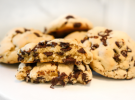
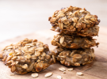
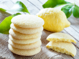

Gotas de Chocolate

Cookies clássicos, crocantes por fora e macios por dentro, com generosas gotas de chocolate derretido que garantem uma explosão de sabor a cada mordida.
Chocolate Amargo com aveia

Uma opção mais intensa e nutritiva, esses cookies combinam o sabor marcante do chocolate amargo com a textura da aveia, oferecendo uma experiência deliciosa e equilibrada.
Limão e Coco

Cookies leves e refrescantes, com o sabor cítrico do limão e a suavidade do coco. Perfeitos para quem busca um doce com um toque tropical e diferente.